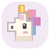

芽芽小星球
B-01 · 短音 /æ/ · 拼出 0/3 个词
0

0
试玩星球 · 不影响冒险进度
跟着声音去旅行
我的小宇宙
×
完成星球的三个任务，就能点亮下一颗。
C
🍎
苹果树
认识它
跟着说
描一描
听出它
大写
S
小写
s
大写 · 1/2
小写 · 2/2
☀️
sun
😮
任务一
💎
好的，出发！
字母墙
0/26
学会的字母会在这里亮起来
元音
a
e
i
o
u
声音星球 · 第一颗
芽芽小星球
一颗小小的星球上，藏着三块会唱歌的水晶。
找到它们，把字母排成一个词——
这个词会变成真的
。
点草地
走过去
拖动
转转视角
点光柱
找水晶
正在加载星球…
基础人物、森林与奖励动物：Kenney CC0；新增探险者、独角兽、小鹿、兔子与装饰为原创。
🐱🎩🦇
星球完成
CAT、HAT、BAT！
飞往下一颗星球 🚀
在这里逛逛
再玩一次